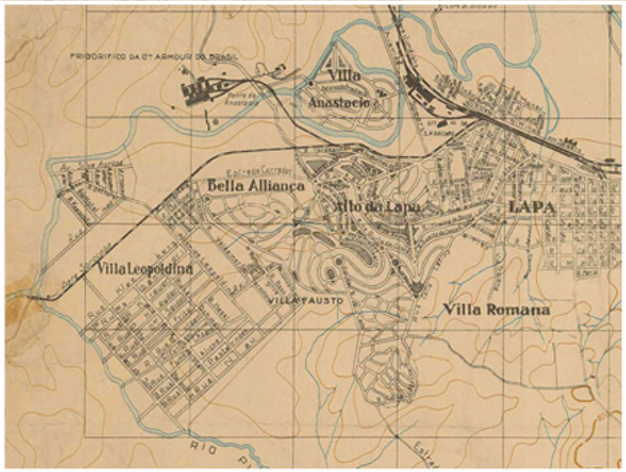

A Vila Leopoldina era parte de um sítio chamado Emboaçava e desde 1827 era de propriedade de João Correia da Silva , razão pela qual a área era conhecida como a Várzea dos Correias. Anos mais tarde foi para as mãos dos jesuítas alemães. Nele havia uma grande casa que servia de residência aos religiosos. Tal sítio foi dividido e, por volta de 1894, a região toda estava coalhada de chácaras dos padres.Vila Leopoldina
O primeiro e grande loteamento da vila aconteceu em 1894, quando a empresa dona da área, E. Richter & Comany, realizou uma jogada publicitária e alugou barcos para os futuros compradores conhecerem os lotes passeando pelo rio Tietê, terminando o passeio num grande piquenique para mais de quinhentos convidados. O nome do bairro veio dessa época – e não foi em homenagem à princesa Leopoldina, e sim a dona Leopoldina Kleeberg, uma das sócias da empresa loteadora.
Mesmo com todo o esforço, o golpe publicitário não foi uma alavanca para o progresso da vila. O terreno era pantanoso e difícil para construir. No final de 1926 a Incorporadora Siciliano & Silva e o empresário Antonio Vilares lotearam quase 500 mil m2.br

O fato é que por quarenta anos ela hibernou. Na década de 1950 foi iniciada a construção do Centro Industrial Miguel Mofarrej, que deu nova vida à vila. No lugar das antigas e ultrapassadas olarias vieram as grandes indústrias, e com elas o desenvolvimento.
Outro fator do progresso da Vila Leopoldina foi a construção da Companhia de Entrepostos e Armazéns Gerais do Estado de São Paulo (Ceagesp), que se tornou um pequeno bairro do distrito da Vila Leopoldina e que trouxe definitivamente o progresso para a região. Afinal, o Ceagesp é, por si só, uma cidade com vida própria.